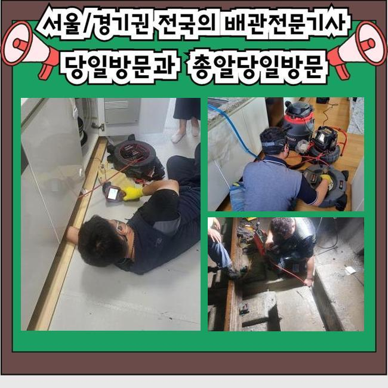
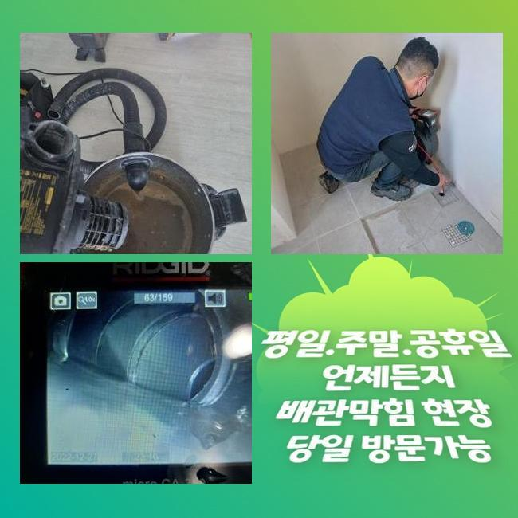
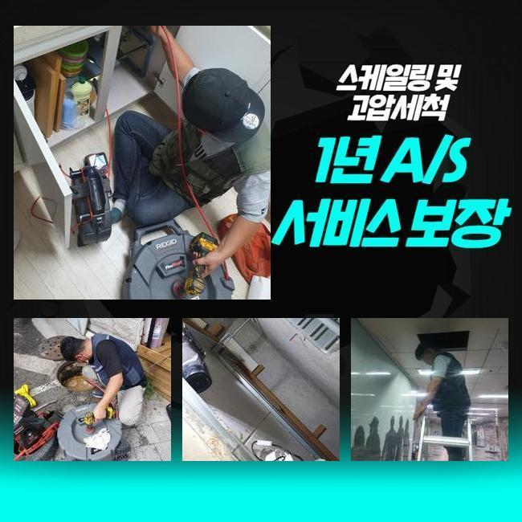
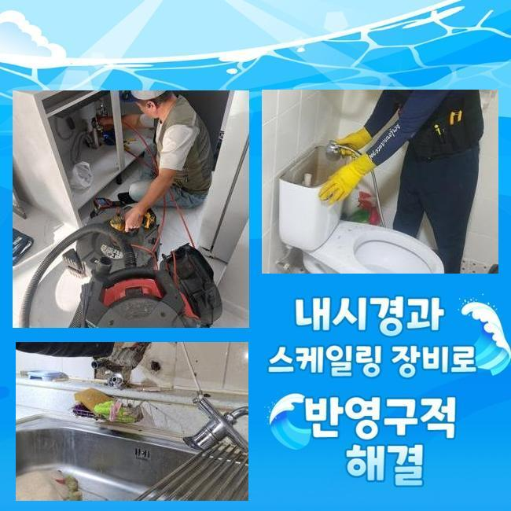
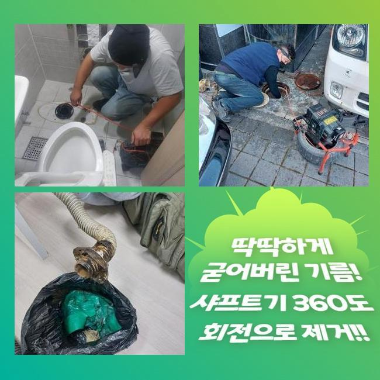
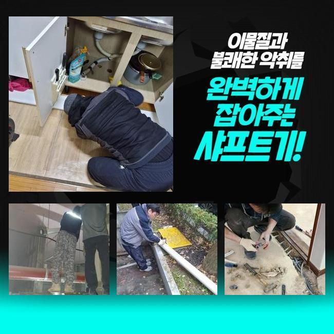
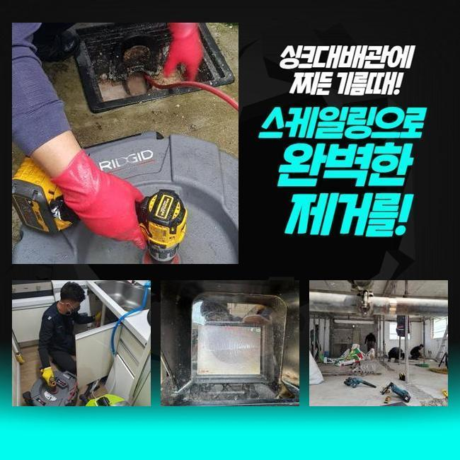

🏠 화정동하수도역류 장곡동 배관뚫기 출장수리
용인 화정동 싱크대막힘 전문 시공 후기

📋 작업 개요
- 위치: 용인 화정동, 화정동, 용인
- 서비스 유형: 싱크대막힘, 하수구막힘, 배관막힘, 집수정막힘, 역류해결, 뚫는업체, 배관청소, 고압세척
- 작업 일시: 2025. 1. 19. 16:06
- 업체명: 하수구수사대 (010-5615-2118)
🔍 문제 상황
화정동하수도역류 장곡동 배관뚫기 출장수리
하수도막힘이 발현되었을때 간단한 문제로 끝나게되면 문제가 없겠지만 방임할경우 2차문제들로 커질수있죠
신속히 대응한다면 좋지만 그럼에도 불구하고 방치하신다면 업체를통해 막힘증세를 처리하시길 바랄게요
금일 방문한곳은 상가로 이뤄진 장소인데 하수관이 막혀서 빠른 출동을 요청하셨죠
이러한일들이 발생되면 급급한 상황들이 대부분이니 신속하게 방문드립니다
상가건물내 음식점에서 막히게 되었다고 하셨죠
하루뒤에 영업을 진행해야하기에 곤란해하시는 상황이었어요
막힌원인에 대하여 파악하기위해 서둘러서 움직였죠
먼저 식당입구와 부엌내부를 살핀결과 트렌치하수구와 연결되어있는 메인관도 막혀있는 상태였죠
막힌상태를 의뢰자분에게 전달드리고나서 수리에 착수하기로 했는데요
작업진행전 필수적으로 의뢰자께 과정에대해 설명드려요

🔎 원인 분석
💡 전문가 진단: 정밀 진단 장비를 사용하여 슬러지의 고착 여부를 판명하고 타격/세척 작업을 실시했습니다.
플렉스샤프트기로 안속에있는 이물질들을 분쇄시켰죠
식당이었기에 기름이물이 가득해있었죠
조심스럽게 강도조절을 진행하며 안속에 쌓인것들을 제거했습니다
중간중간에 기름기들이 오염물제거가 깨끗히 진행되는지 배관카메라를 통하여 체크하면서 진행했어요
역류중이던 하수구이다보니 신경쓰면서 크랙이 발생하지않게 작업에 임했는데 다행인것으로 2차증세없이 역류현상을 바로잡아서 안심했죠
외부작업을 마친뒤 주방내부쪽으로 이동했답니다
부엌에 위치하는 싱크대에서 물이 빠지질 않는다고 하셨기에 내시경을 통해 검사를 진행해주었네요
원인파악을 해봤더니 기름기가 석회물로 변형되어 막힘문제가 일어난걸로 판단할수있었어요
고착물질을 제거하고자 분쇄기계로 잘게 부숴 주었습니다
이다음엔 잔여되어진 찌꺼기를 석션장비를 활용해 흡입하는 과정으로 착수했어요
막히는문제는 여러원인을 통하여 막히게되지만 주요원인은 하수구속에 잔해물질이 쌓이면서 막히는거에요

🔧 작업 과정
이렇다보니 오염물과 같은것이 들어가지않게 주의해주시고 정기적인 배관을 점검하여 문제에 대하여 체크해주시는 게 좋겠습니다
긴시간 작업하며 트렌치내에 잔존되었던 기름슬러지와 오염물들을 처리할수있었죠
집수정쪽도 마찬가지로 막혀있는걸 알아냈죠 집수정특성상 샤프트기나 석션기로는 뚫는것은 쉽지않기에 고압청소기가 필요했죠
작업에 들어가기전에 고객분꼐 양해를구한뒤 고압세척작업 필요성과 관련하여 자세히 일러드렸죠
고압청소기는 강한압력의 물을 통하여 이용되므로 손상되지 않도록 주의함이 요구됩니다
과도하게 진행되면 하수관벽에 손상문제로 연결될 가능성이 있어요
집수정안에 기름기가 가득하여 고압청소기로 쌓여있는 잔해물들을 밀어내주면서 제거했는데요
집수정과 트렌치까지 전부 작업해보니 배수상황이 원활히 이루어지는것을 살필수있었어요
식당처럼 영업장소라면 경제적으로 손해를 입으실수있어 항시 조속하게 내방해 드리고있죠
싱크대 거름망과 배관트랩을 설치하여 막힘문제와 악취현상을 방지해볼수 있겠습니다
확실하게 처리하는 해결책이라면 막힘징조를 보았을때 발견그즉시 전문인을 호출해 처리하는겁니다
한번 더 강조드리는것으로 막힘증세를 내버려 두신다면 물이새거나 역류하는 문제로 연결될수있어요
막힌하수구를 뚫어보려고 자가조치를 여러번 해보셨을거라 생각해요 가볍게 조치해볼수있는 방식들을 알려드려보죠
온수나 배수구클리너를 적절히 이용하여 하수구에 부어부시고 이렇게해도 처리되지 않으면 전문가를 호출해 도움을 받아보셔야 한답니다
과하게 시도하실경우 배수구에 파손문제가 발현될수도 있기에 적절한 양을 통해 시도바래요
어떠한 곳이라도 배수관이 막히게된다면 당혹스러울 겁니다
저희들의 경우에는 상가건물과 아파트 빌라등등 어떠한 장소든 방문할수 있어요


✅ 작업 완료
작업에 착수할때 분명한 수립계획으로 진행해야지만 신뢰할수 있을겁니다
현장상황을 우선 살핀후 뚫는비용과 관련해 상세히 안내드려요
씽크대나 욕실배관은 간단히 석션기로만 해결될경우 5~10만원 내외로 책정하니 참고바랍니다
하수구와 관련해 궁금한부분이 있으시면 시간상관없이 전화주신다면 세세한 상담을 통하여 돕도록 할게요!
막힘문제 미루지말고 빠르게 대응하여 피해받지 않으셨으면 좋겠어요!




⚠️ 주방 싱크대 배관 막힘 예방 수칙
- ✅ 기름기가 묻은 식기나 프라이팬은 설거지 전 키친타올로 반드시 기름때를 닦아내세요.
- ✅ 주기적으로 싱크대 개수대에 뜨거운 물을 가득 받아 한 번에 내려 배관 내부 기름을 씻어내세요.
- ✅ 배수구 거름망을 미세한 필터로 사용하시고 음식물 찌꺼기가 틈으로 새어 들지 않게 관리하세요.
- ✅ 베이킹소다와 식초를 뜨거운 물과 함께 일주일에 한 번씩 부어주면 배관 살균과 막힘 예방에 좋습니다.
💡 핵심 정리
- 확실한 장비 작업(내시경 점검 및 샤프트 스케일링)으로 원인을 뿌리 뽑습니다.
- 작업 후 1년 이내에 동일한 부위 재발 시 100% 무상 A/S 서비스를 보장합니다.
- 서울 · 경기 · 인천 전 지역에 24시간 언제든 긴급 출동할 수 있도록 항시 대기 중입니다.
❓ 자주 묻는 질문 (FAQ)
🚨 용인 화정동 싱크대막힘 문제로 고민이신가요?
정확한 원인 진단과 확실한 시공으로 재발 없는 해결을 약속드립니다.
24시간 긴급 출동 | 서울 · 경기 · 인천 전지역 | 1년 내 재발 시 무상 A/S